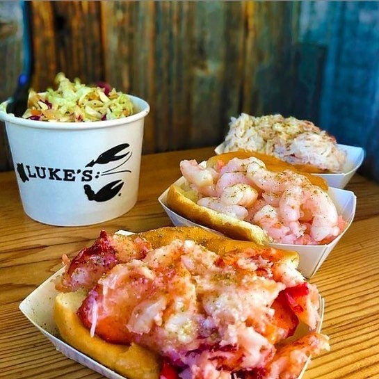

Lobster Roll
Le Lobster Roll est une véritable pépite culinaire, mettant en valeur la délicatesse du homard qui abonde dans la région. Servi dans un pain à hot-dog, ce sandwich est garni de morceaux de homard sublimement assaisonnés, que ce soit avec une onctueuse mayonnaise ou une sauce au beurre persillée. C'est une expérience gustative exceptionnelle à un prix tout à fait abordable compte tenu de la noblesse du homard. Si vous êtes en quête d'un mets inoubliable qui capture la saveur authentique de la mer, le Lobster Roll est un choix à ne pas manquer. Une bouchée de ce délice vous transportera immédiatement au bord de l'océan.